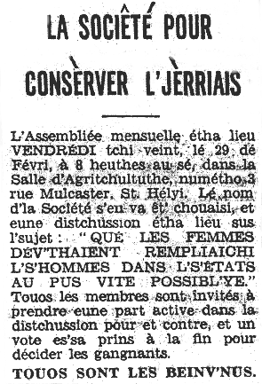

A l'assembliée mensuelle tch'eut lieu à 8 héuthes au sé Vendrèdi lé 29 dé Févri, dans la Salle d'Agritchultuthe, numétho 3 rue Mulcaster, St. Hélyi, souos la présidence du Sénateu Hedley Le Riche Edwards, lé nom "L'ASSEMBLIEE D'JERRIAIS" fut adopté par eune grand' majorité.
L'y-avait eune quarantaine dé membres présents, et la distchussion du sujet: "Qué les femmes dév'thaient rempliaichi l's'hommes dans l's'Etats au pus vite pôssibl'ye!" montrit qué touos les Jèrriais n'sont pas d'la même opinion!
Dans un rêsunmé supèrbe tchi vaudrait la peine d'êt' publiyé dans l's'almonas, Mlle. Florence M. Hacquoil êprouvit à r'cliâmer qué les femmes sont capabl'yes d'gouvèrner l'monde entchi sans pâler d'Jèrri - et ou fut s'gondée d'eune maniéthe admithabl'ye et ênèrgique par Mme. Marie Trachy. Quand Me. Winter du Tot et l'Sénateu Edwards eûtent lé toupé d'propôser et s'gonder la propôsition « contre," nou n'éthait janmais pensé tch'il' éthaient peut gangni, mais pourtant ch'tait acouo lus côté tch'emportit la victouaithe!
Ch'est r'mèrquabl'ye tch'est qu'nou peut trouver à dithe pour ou contre un sujet comme ch't'ilà! A ouï les femmes, i' pathait qu'les hommes ont fait un tas d'bêtises comme législateurs. D'l'aut' côté, l's'hommes craient qu'les femmes cacqu'téthaient tant qué l's'Etats s'saient comme un poulailli s'il' 'taient là à les rempliaichi.
Moussieu George W. Bertram, tchi présidit la distchussion, fit eune récapitulation dingne d'un avocat, et d'mandit ès membres d'en décider. Quand les vouaix fûtent comptées l'y-avait eune grand' majorité en faveur dé laissi les femmes à la maiethon à faithe d'la bouanne soupe et souangni du mênage, viyant tch'il' ont prouvé tch'i' peuvent faithe ch'la mus qu'autcheun homme - et d'laissi ls'hommes continuer comme membres d's'Etats - ch'est-en-tchi, Messieux les Législateurs, n'séyiz pon épeûthés pour lé moment - ou-s êt' acouo solides dans vouos siéges législatifs!
Evening Post 3/3/1952
Viyiz étout: